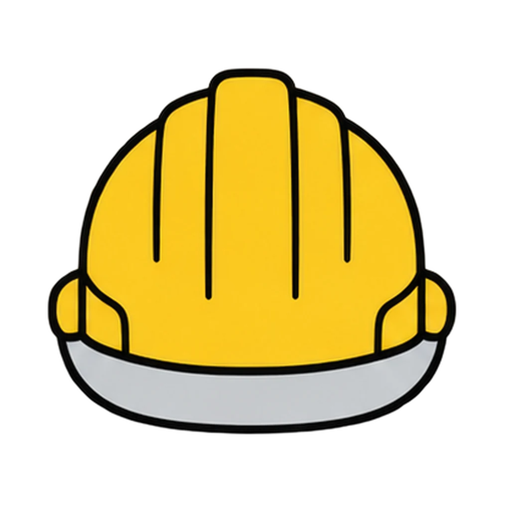
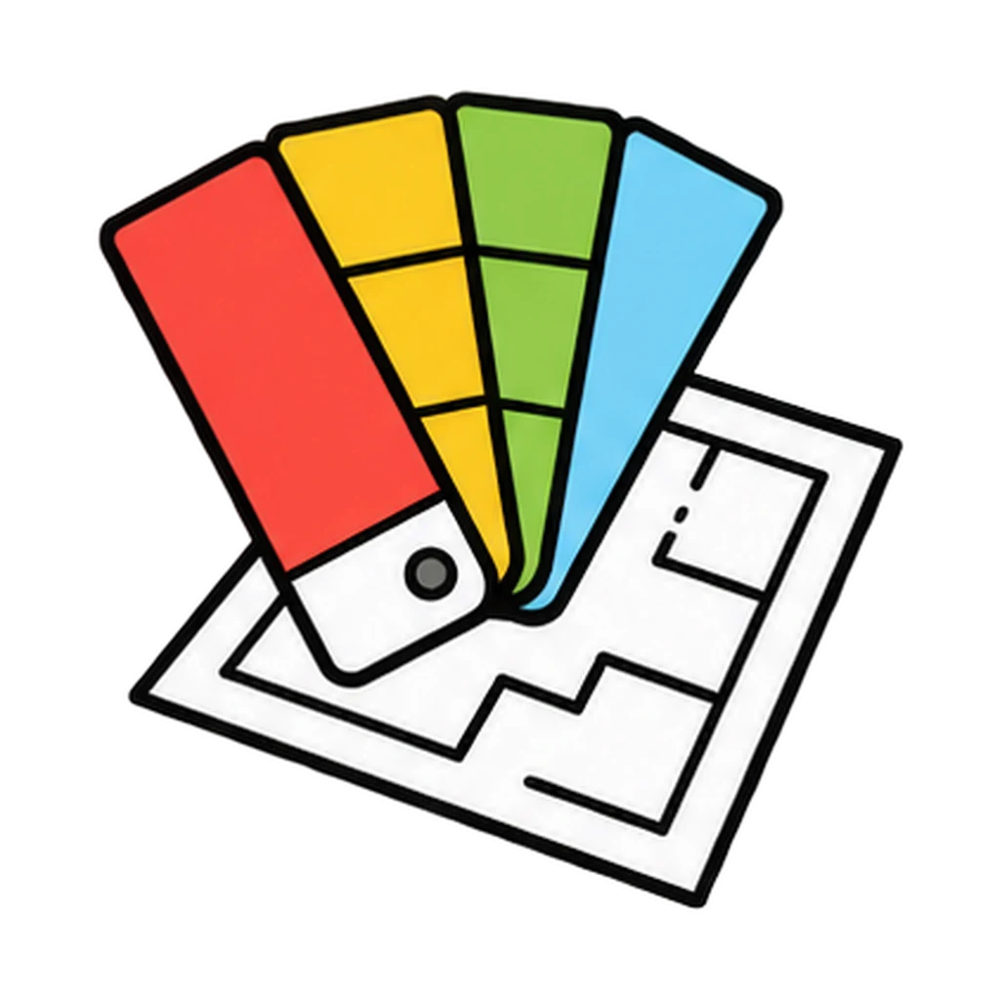
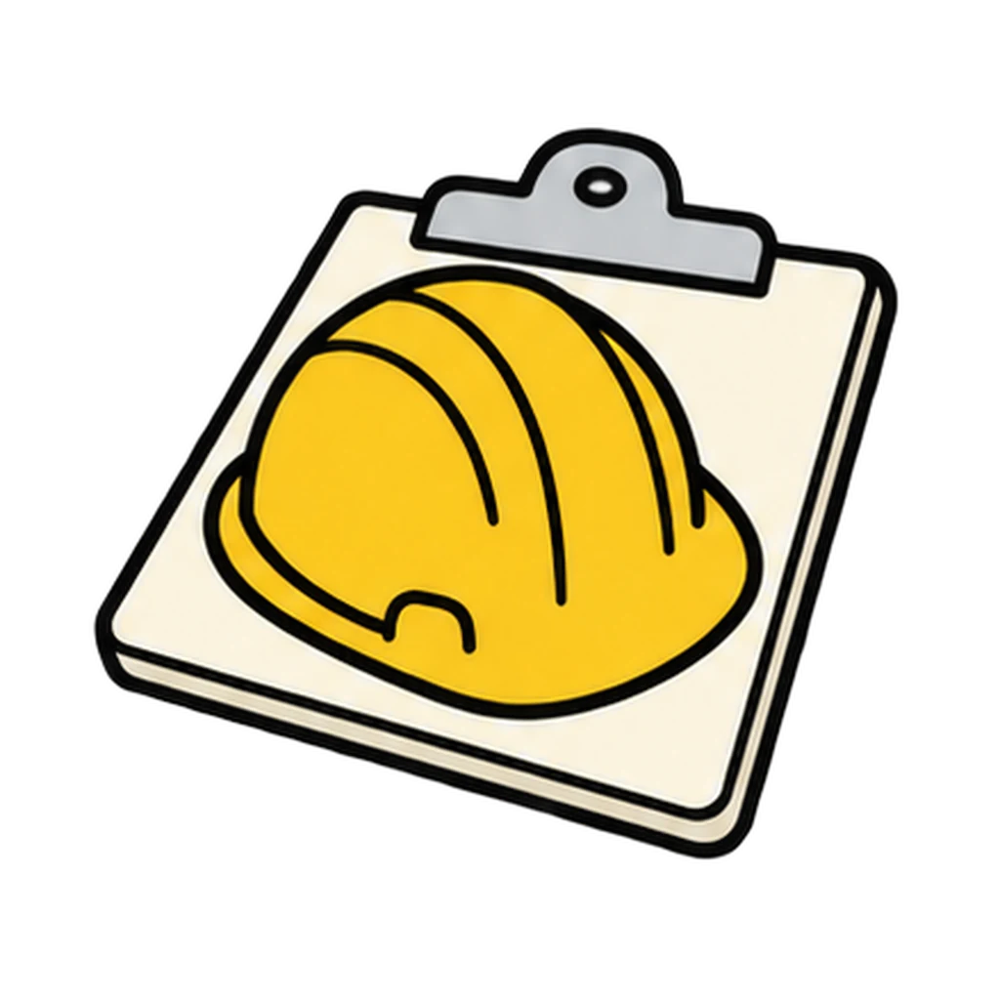
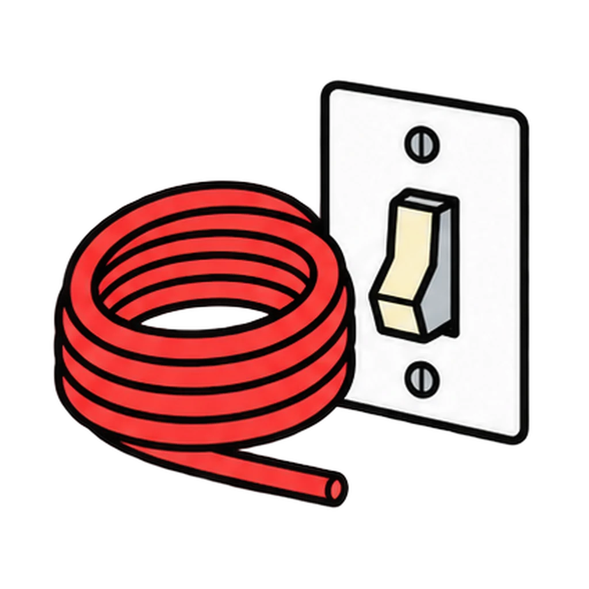
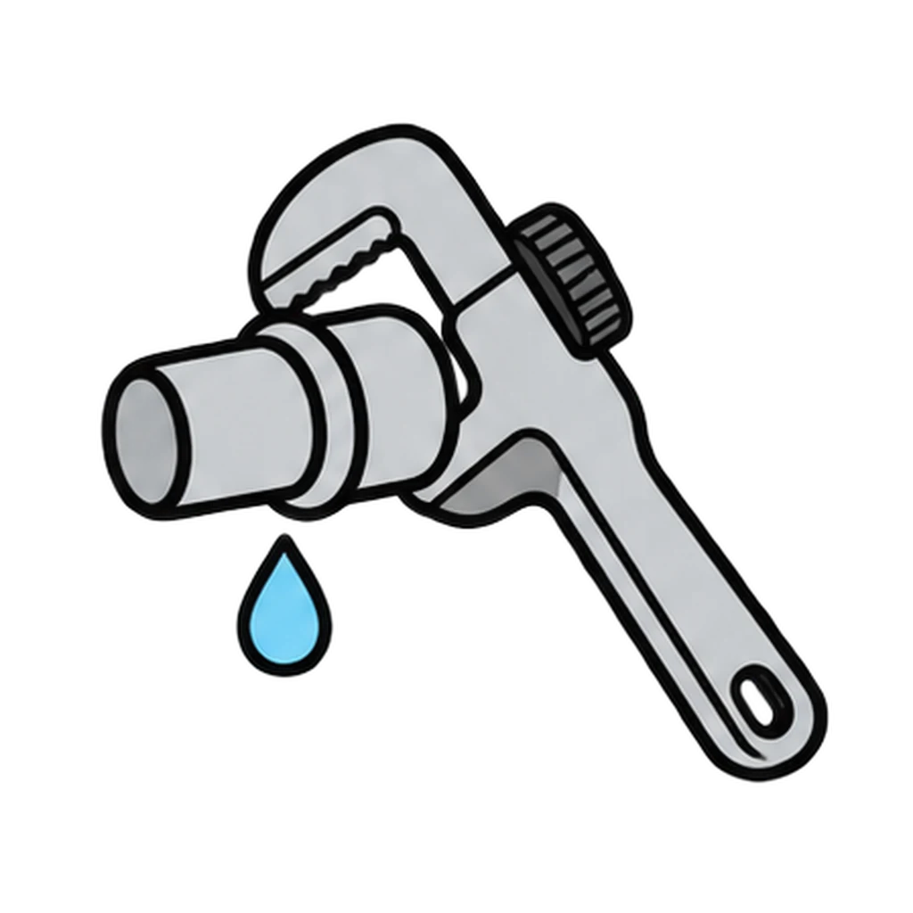
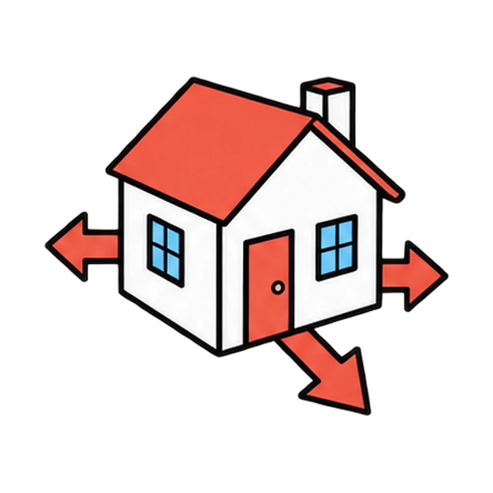
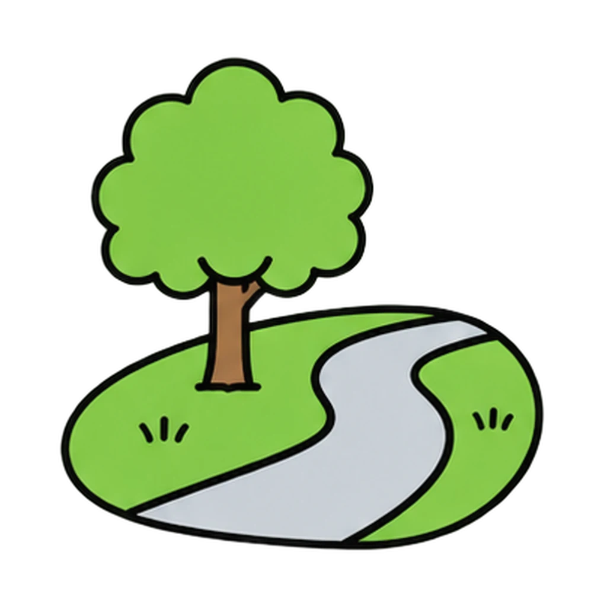
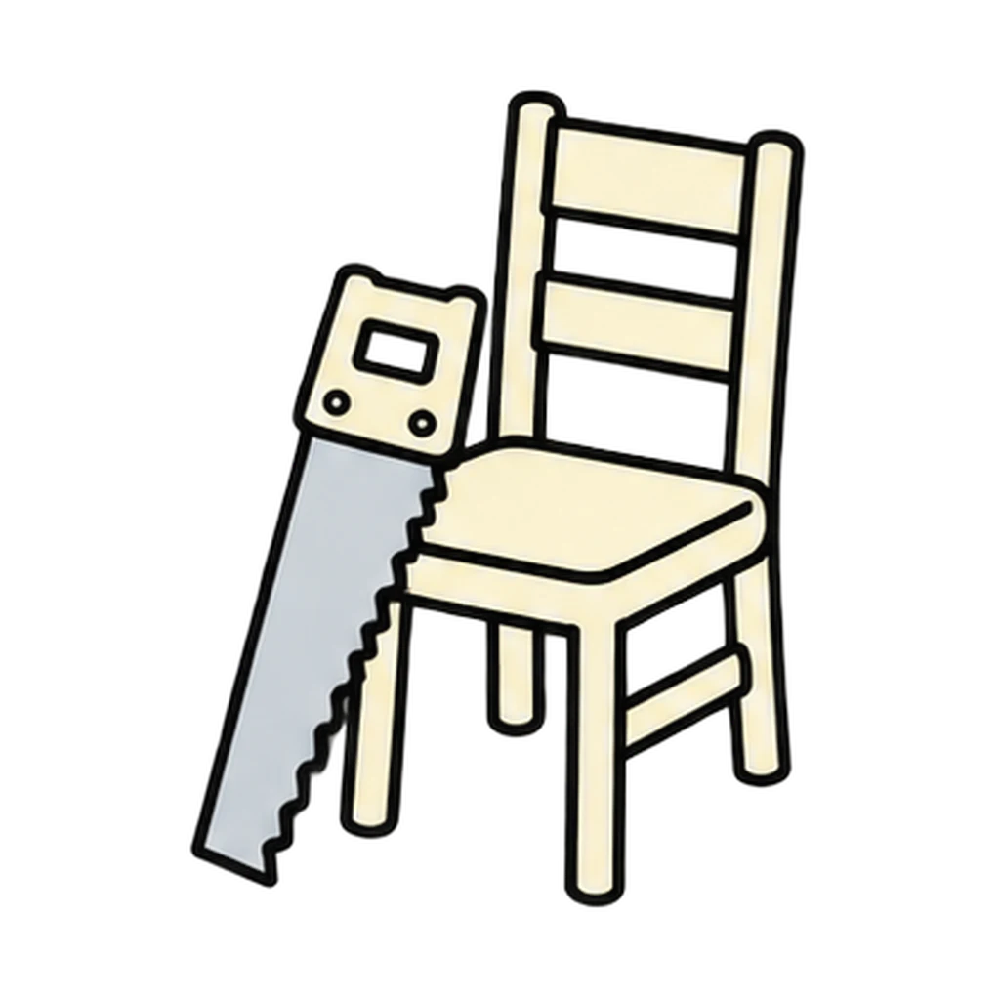
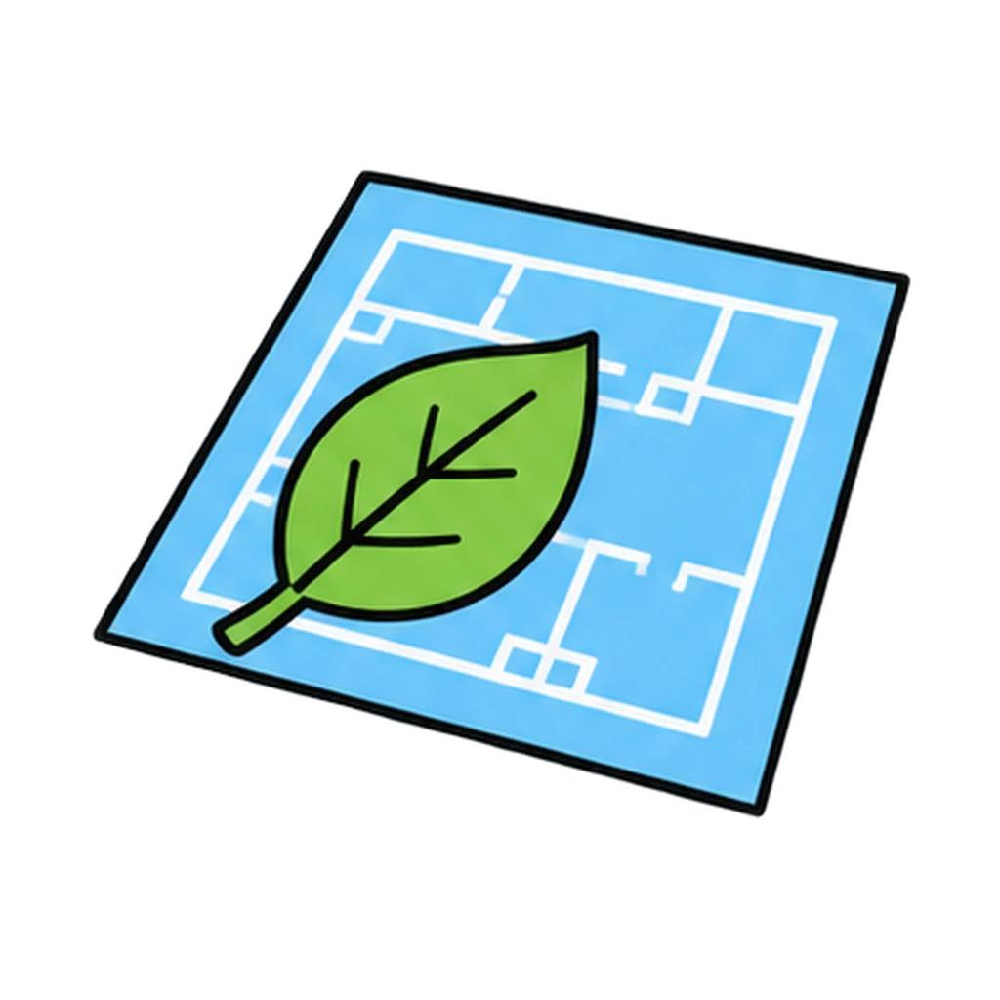

Reviews Lesson 4.16. Reviews Lesson 4.16: the thirteen careers on the Project Chain sheet and the path sort from the card sort. Use it as the Lesson 4.17 do now if most of a class chose the degree path only, or as the review for the careers items on the Unit 4 Test, or again in Unit 7 when the career cards come back. About two and a half minutes. Pay figures are not in the game; they move every year and belong on the cards.

Who Built It
A step from the Okafor room project appears. Tap the career that does it from four choices. Then a career card appears, and you tap its path: college degree, apprenticeship or trade school, or license.
How to play








Done
The ones to study:
Worth knowing by heart:
- Three paths: a college degree; an apprenticeship or trade school after high school CTE; a license earned after a course and experience.
- An apprentice is paid from day one.
- The contractor builds; the inspector checks the builder and works for the buyer or the town, not the builder.